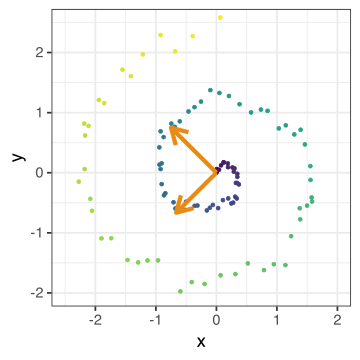
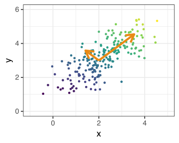
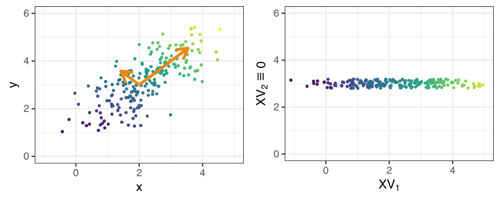
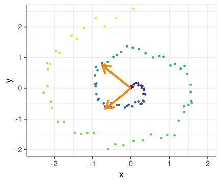
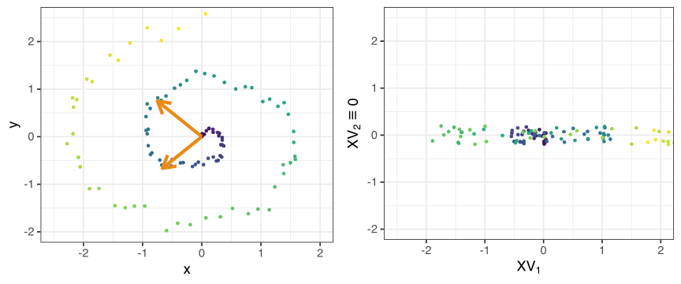
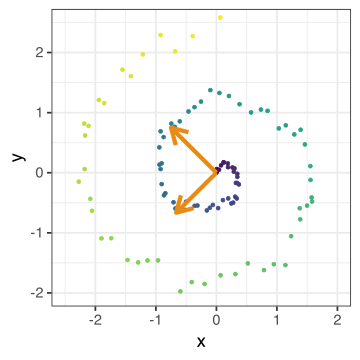

Stat 406
Geoff Pleiss, Trevor Campbell
Last modified – 23 November 2023
\[ \DeclareMathOperator*{\argmin}{argmin} \DeclareMathOperator*{\argmax}{argmax} \DeclareMathOperator*{\minimize}{minimize} \DeclareMathOperator*{\maximize}{maximize} \DeclareMathOperator*{\find}{find} \DeclareMathOperator{\st}{subject\,\,to} \newcommand{\E}{E} \newcommand{\Expect}[1]{\E\left[ #1 \right]} \newcommand{\Var}[1]{\mathrm{Var}\left[ #1 \right]} \newcommand{\Cov}[2]{\mathrm{Cov}\left[#1,\ #2\right]} \newcommand{\given}{\ \vert\ } \newcommand{\X}{\mathbf{X}} \newcommand{\x}{\mathbf{x}} \newcommand{\y}{\mathbf{y}} \newcommand{\P}{\mathcal{P}} \newcommand{\R}{\mathbb{R}} \newcommand{\norm}[1]{\left\lVert #1 \right\rVert} \newcommand{\snorm}[1]{\lVert #1 \rVert} \newcommand{\tr}[1]{\mbox{tr}(#1)} \newcommand{\brt}{\widehat{\beta}^R_{s}} \newcommand{\brl}{\widehat{\beta}^R_{\lambda}} \newcommand{\bls}{\widehat{\beta}_{ols}} \newcommand{\blt}{\widehat{\beta}^L_{s}} \newcommand{\bll}{\widehat{\beta}^L_{\lambda}} \newcommand{\U}{\mathbf{U}} \newcommand{\D}{\mathbf{D}} \newcommand{\V}{\mathbf{V}} \]
If we knew how to rotate our data, then we could more easily retain the structure.
PCA gives us exactly this rotation
PCA works when the data can be represented (in a lower dimension) as lines (or planes, or hyperplanes).
So, in two dimensions:
Here, we can capture a lot of the variation and underlying structure with just 1 dimension,
instead of the original 2 (the colouring is for visualizing).
What about other data structures? Again in two dimensions
Here, we have failed miserably.
There is actually only 1 dimension to this data (imagine walking up the spiral going from purple to yellow).
However, when we write it as 1 PCA dimension, all the points are all “mixed up”.
PCA wants to minimize distances (equivalently maximize variance).
This means it slices through the data at the meatiest point, and then the next one, and so on.
If the data are curved this is going to induce artifacts.
PCA also looks at things as being close if they are near each other in a Euclidean sense.
On the spiral, our intuition says that things are close only if the distance is constrained to go along the curve.
In other words, purple and blue are close, blue and yellow are not.

Classical PCA comes from \(\X= \U\D\V^{\top}\), the SVD of the (centered) data
However, we can just as easily get it from the outer product \(\mathbf{K} = \X\X^{\top} = \U\D^2\U^{\top}\)
The intuition behind KPCA is that \(\mathbf{K}\) is an expansion into a kernel space, where \[\mathbf{K}_{i,i'} = k(x_i,\ x_{i'}) = \langle x_i,x_{i'} \rangle\]
We saw this trick before with feature expansion.
The scores are still \(\mathbf{Z} = \U_M\D_M\)
Note
We don’t explicitly generate the feature map \(\longrightarrow\) there are NO loadings
To get the first PC in classical PCA, we solve \[\max_\alpha \Var{\X\alpha} \quad \textrm{ subject to } \quad \left|\left| \alpha \right|\right|_2^2 = 1\]
In the kernel setting we solve \[\max_{g \in \mathcal{H}_k} \Var{g(X)} \quad \textrm{ subject to } \quad\left|\left| g \right|\right|_{\mathcal{H}_k} = 1\]
Here \(\mathcal{H}_k\) is a function space determined by \(k(x,x')\).
For more details see [ESL 14.5]
n <- nrow(df_spiral)
I_M <- (diag(n) - tcrossprod(rep(1, n)) / n)
kp <- (tcrossprod(as.matrix(df_spiral[, 1:2])) + 1)^2
Kp <- I_M %*% kp %*% I_M
Ep <- eigen(Kp, symmetric = TRUE)
polydf <- tibble(
x = Ep$vectors[, 1] * Ep$values[1],
y = jit,
z = df_spiral$z
)
kg <- exp(-as.matrix(dist(df_spiral[, 1:2]))^2 / 1)
Kg <- I_M %*% kg %*% I_M
Eg <- eigen(Kg, symmetric = TRUE)
gaussdf <- tibble(
x = Eg$vectors[, 1] * Eg$values[1],
y = jit,
z = df_spiral$z
)
dfkern <- bind_rows(df_spiral, df_spiral2, polydf, gaussdf)
dfkern$method <- rep(c("data", "pca", "kpoly (d = 2)", "kgauss (gamma = 1)"), each = n)Kernel PCA seeks to generalize the notion of similarity using a kernel map
This can be interpreted as finding smooth, orthogonal directions in an RKHS
This can allow us to start picking up nonlinear (in the original feature space) aspects of our data
This new representation can be passed to a supervised method to form a semisupervised learner
This kernel is different than kernel smoothing!!
You get data \(\{(x_1,y_1),\ldots,(x_n,y_n)\}\).
You do something unsupervised on \(\X\) to create new features (like PCA).
You use the learned features to find a predictor \(\hat{f}\) (say, do OLS on them)
music <- Stat406::popmusic_train
X <- music |> select(danceability:energy, loudness, speechiness:valence)
pca <- prcomp(X, scale = TRUE)
Z <- predict(pca)[, 1:2]
Zgrid <- expand.grid(
Z1 = seq(min(Z[,1]), max(Z[,1]), len = 100L),
Z2 = seq(min(Z[,2]), max(Z[,2]), len = 100L)
)
out <- class::knn(Z, Zgrid, music$artist, k = 6)Recall that for nonparametric regression, we must deal with the curse of dimensionality.
This did KNN in 2 dimensions instead of 8: less curse
However, the dimensions were learned independently of \(\y\): may not be helpful
There’s a bias-variance tradeoff here…
Imagine that the Population data lie near a low-dimensional linear manifold…
PCA / KPCA are estimating the manifold.
We just need the data near the manifold. But if not, then we introduced a lot of bias.
PCA estimates linear manifolds, KPCA estimates non-linear
More PCA vs. KPCA
UBC Stat 406 - 2024